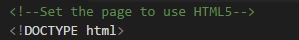
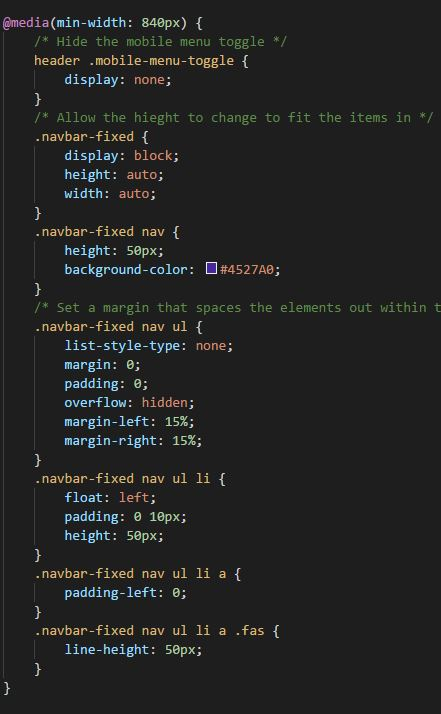

In the first term I have learnt alot about web development. I have learnt that it is complicated to make a website that works in all scenarios and for all users. There are many elements that must be configured in order to create a successful website. For example you have to correctly configure your DOCTYPE in order for the browser to know which version of HTML you're using, the image below shows the HTML5 doc type used in this site.
I have learnt that web development is a complicated thing to get good at, you end up making lots of tiny errors that can mess up the whole site and it can be quite difficult to find and fix these. I can see how once you're more confident and understand thoroughly the way it works that you will make less mistakes and be more capable of quickly finding and fixing the ones you do make.
There are various tools available for validating a websites content. One of these tools is W3Cs HTML validator which I have used to validate the content of each of my pages.
All of the pages passed validation successfully meaning I havent got any errors within the site and haven't misused any elements.
I have learnt that CSS can do alot more than just make the page look good, you can change the content of the page based on parameters of the screen the user is viewing the site on. These are called media queries, they can have rules set up such as if the screen is larger than 840px then you can apply additional rules over the already applied ones. This works well when developing using a mobile first technique as you can have the mobile styles thee first and then override them as the screen gets bigger.
I used media queries to create a mobile menu for my site. I had the idea for a better mobile menu when looking at other sites for inspiration, such as Material Design Blog and Dribble.
Another validator that's available is a CSS validator, also from W3C. I have used this to check the CSS of my pages is valid and evidence is below.